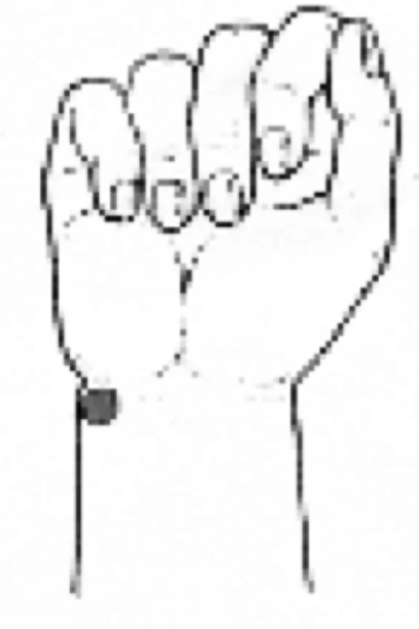
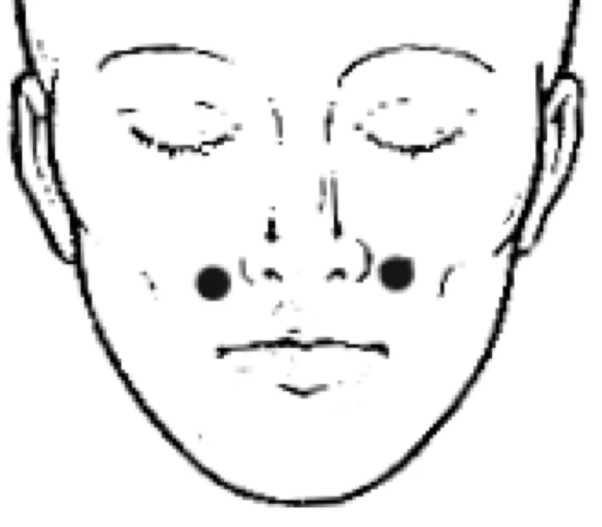

Angst
- In Ängsten findet manches statt, was sonst nicht stattgefunden hat. - (Wilhelm Busch)
ALLGEMEIN: Angst ist das Tor zu vielen Krankheiten. In der Psychologie unterscheidet man zwischen Angst und Furcht: Furcht ist die konkrete Angst, das heißt ich weiß genau, wovor ich mich fürchte (z.B. Furcht vor Versagen, vor Hunden, vor dem Autofahren etc.). Man bekommt die Krankheit, vor der man sich schon immer gefürchtet hat. Angst ist eher unbestimmter Natur, das heißt ich weiß nicht, wovor ich Angst habe und kann die Ursache nicht benennen. Sie ist jedoch lebensnotwendig, da sie uns dazu zwingt, auf Gefahren zu reagieren. Befällt uns das Gefühl aber oft in harmlosen Alltagssituationen, wird es zu einem Problem und schränkt das persönliche Leben erheblich ein. Menschen mit Angststörungen haben ein vierfach höheres Risiko an Herzinfarkt und Schlaganfall zu erkranken (Blut gerinnt/Adern). Halten Angstzustände länger an, so bilden sich kompakte, weiße Wolken im Urin. Die Angst entzieht den Knochen/Gelenken Kalk mit der Folge von Osteoporose.
URSACHEN: Schilddrüsenfunktionsstörungen, Vitamin B- und Eisenmangel, mangelnde Nasenatmung bzw. zu schnelles Atmen, überfüllte Harnblase, Blähungen, Darm sanieren. Niedrige Cholesterinwerte, Amalgam (enthält unter anderem Quecksilber). Angst, Schüchternheit sind Hauptsymptome einer Quecksilberbelastung. Defekt im Innenohr, Jodallergie, Magnesiummangel. Umweltfaktoren, Genetische Disposition. Stress: Wenn der Mensch in Stress gerät, wird im Gehirn die Herstellung des „Glückshormons“ Serotonin blockiert. Angst-Seelen im Krisenmodus! Panikattacken, Phobien und Depressionen, noch nie waren so viele Menschen von Angststörungen betroffen, wie heute. Dabei wirken die Pandemie und die Corona-Maßnahmen wie Brandbeschleuniger.(Prof. Pich, Donau-Uni, Krems- 3 SAT vom 08.09.2021)
SYMPTOME: Atemnot, trockener Mund, Schweißausbrüche und Herzbeklemmung.
ERNÄHRUNG: Die Gurke ist ein natürliches Beruhigungsmittel. Sie enthält viel Vitamin B6. Bei Platzangst liegt oft großer Phosphormangel vor. Phosphor kommt meist in Gesellschaft mit natürlichen Vitamin C Spendern vor (Obst, Gemüse, Kartoffeln, Sellerie, Sanddorn). Zimt/Ingwer essen, wirkt angstlösend. Thymian ist ein gutes, natürliches Beruhigungsmittel. Er besitzt die Fähigkeit, Angst zu vertreiben.Viel Borretsch essen.
MEIDEN: Verzicht nach der KATZ-Regel: Koffein, Alkohol, Tabak, Zucker. Aspartam (NutraSweet, Canderel-Light Produkte, E951). Histamin-Unverträglichkeit (siehe Allergie). Alle chemischen Gifte aus der Wohnung beseitigen (Mottenkugeln, Toilettensteine etc.).
GETRÄNKE: Matetee ist das Getränk für den Prüfling. Anregung, bessere Konzentrationsfähigkeit und vor allem ein besseres Aufnahmevermögen sind das Ergebnis. Johanniskraut-Tee vertreibt die Angst und hebt die Stimmung (abends nicht trinken - regt an), Lavendelblüten, Melisse, Baldrian.
THERAPIE: Gehen Sie den Problemen nicht aus dem Weg und teilen Sie Empfindungen, die Sie belasten, anderen Menschen mit. Aus Angst vor der Angst meiden Betroffene alltägliche Situationen. Dadurch wird die Furchtsamkeit immer größer. Lassen Sie sich deshalb behandeln. Unbehandelt kann sie in eine Depression übergehen.
Einfache Entspannungsübung
5 Minuten ruhig hinsetzen, Augen schließen, Hände auf die Oberschenkel legen. Lauschen Sie Ihrem Atem und konzentrieren Sie sich auf das Geräusch beim Ein- und Ausatmen. Ich atme tief, was Ruhe schafft, denn in der Ruhe liegt die Kraft, das beruhigt. Zarten Druck beider Hände auf die geschlossenen Augen ausüben.
- Kräftig ein- und sehr, sehr lange ausatmen, so als wolle man eine Feder wegblasen. Ansonsten entsteht Sauerstoffmangel im Gehirn.
- Eine besonders hilfreiche Übung ist die dreiteilige Atmung: Einatmen - Ausatmen - Atemruhe. Die Atemruhe sollte so lange ausgedehnt werden, bis ein leichter Wunsch nach mehr Luft entsteht. (siehe Atmung/Buteyko)
- Menschen mit Ängsten, so z.B. vor dem Fliegen oder einer Prüfung, atmen oft zu schnell, so dass zuviel Sauerstoff ein und vermehrt Kohlendioxyd ausgeatmet wird. Dadurch gerät das Sauerstoff-Kohlendioxyd-Verhältnis im Blut aus dem Gleichgewicht. Panikattacken sind oft die Folge.
- Vor dem Zubettgehen 2 Teelöffel Honig einnehmen und warme Salzfußbäder machen.
- 2-3 Tropfen Lavendelöl mit einem Zuckerwürfel lutschen.
- Viel Sport treiben. Durch Lauftraining können Ängste genauso erfolgreich abgebaut werden, wie durch die Einnahme von Psychopharmaka.
- Brustwirbel einrichten lassen (siehe Dorn-Therapie).
- Versuchen Sie, anderen Menschen in die Augen zu sehen.
- Knuddeln hält Leib und Seele zusammen.
- Umarmungen können helfen, vor Krankheiten zu schützen. Wer in den Arm genommen wird, fühlt im besten Fall Vertrauen, Zuneigung, Sicherheit und Trost - das ist gut für die Psyche und damit auch für das körperliche Wohlbefinden.
- Akupressur: In der Beugeseite des Handgelenks, befindet sich dieser Punkt. Ca. 1 Minute akupressieren.

- Kräftigen Druck auf das Schwimmhäutchen zwischen Daumen und Zeigefinger ausüben. - Über die Akupunkturpunkte an den Nasenflügeln können Sie mit gezielter Akupressur (1-2 Minuten mit Kuli oder Zeigefinger) das gefürchtete Lampenfieber einfach abschalten.

Yoga-Übung: Drücken Sie ca. 2-3 Minuten den Daumen der rechten Hand kräftig gegen die Ringfingerkuppe. Die restlichen Finger dabei möglichst geradehalten, aber nicht verkrampfen.
Sonstiges: Bei Flugangst vor dem Flug Himbeeren essen, Karotten beruhigen den Magen. Ich akzeptiere mich aus ganzem Herzen mit all meinen Problemen und Unzulänglichkeiten. Weitere Info zum Auswirkungen der Angst finden Sie auf den letzten Seiten dieses Buches unter „Richtige Ernährung für den Geist und die Seele“.
MEDIKAMENTE: Passiflora-incarnata Urtinktur (3 x täglich 10 Tropfen), Pascoflair® 425 mg Tabletten (pflanzliches Arzneimittel zur Beruhigung), Lasea® Kapseln/Lavendelöl. Magnesium phosphoricum D6 (3 x täglich 2 Tabletten lutschen). Am Vorabend einer Prüfung als Heiße 7 anwenden – 10 Tabletten in warmem Wasser auflösen und in kleinen Schlückchen trinken. Arsenicum album D12 Globuli (3x tägl. 5 lutschen). Vanilleöl (8-10 Tropfen) auf 4 Teelöffel Wasser in einer Duftlampe verdampfen lassen/einatmen, wirkt beruhigend und ausgleichend. Lavendel: (Lavendula angustifolia) ist ein natürliches Mittel gegen Stress, innere Unruhe und Ängste. Konzentriertes Lavendelöl, z.B.- Lasea® Kapseln erhalten Sie in ihrer Apotheke. Bachblüten: Mimulus/Furcht und konkreter Angst. Aspen/unbestimmter Angst. Gentian/negativen Gedanken, Rock Rose/Panik und Schreck. Walnut, um sich auf innere Veränderungen einlassen zu können (Heilpraktiker befragen).